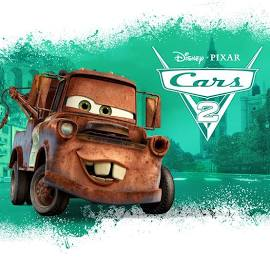

Carros 2
O astro das corridas, Relâmpago McQueen, e o carro-guincho, Mate, viajam para disputar o
primeiro
Grand Prix Mundial, que irá revelar o carro mais veloz do planeta. Nessa jornada imperdível,
Mate se
envolve com um grupo de espionagem e vive grandes aventuras com seus amigos.
- Brad Lewis, John Lasseter
- Gênero: Animação
- Ano de Lançamento : 2011
Comentários
Kaua comentou : Bom!!!Ao contrário do primeiro filme,Carros 2 é mais focado em Mate do que em
Mc-
Queen.O filme também muda bastante o foco da historia em relação ao primeiro
Vanessa comentou : Carro 2 conseguiu superar original por ter mais aventura com um pitada de
espio-
nagem e o personagem Mate o guincho ferrugem ganhou mais destaque na trama escrito por Brad Lewis.
Desta vez vislumbramos várias paisagens turísticas ao redor do mundo como Japão, França, Itália e Inglaterra.
